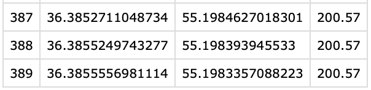
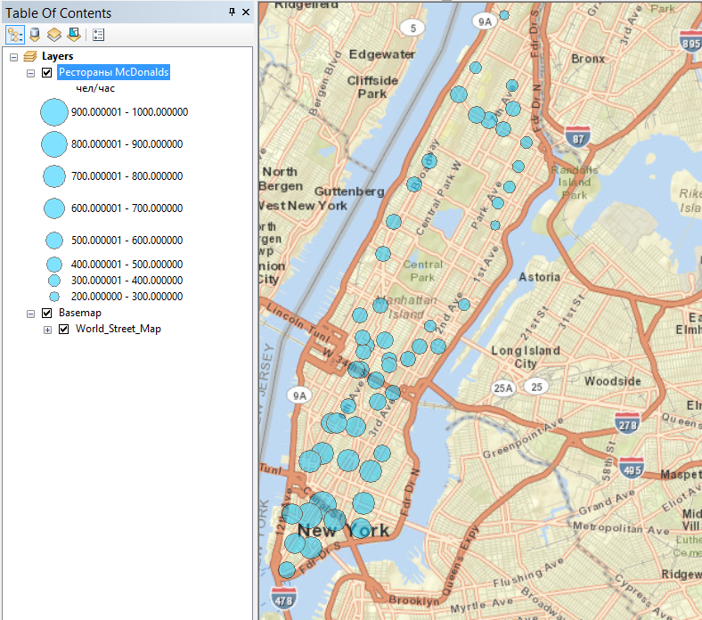

Пространственная привязка и создание объектов
Основы геоинформатики. Лекция 3
14 февраля 2025 г.
Преобразование координат
Преобразование координат включает три различных операции:
Трансформирование — пересчет географических координат с одного датума на другой.
Проецирование — от географических координат к плоским прямоугольным.
Обратное проецирование — от плоских прямоугольных координат к географическим.

spatialreference.org
Удобный ресурс для поиска описаний координатных систем отсчета

Опорные точки
Координатная привязка выполняется по опорным точкам.

Необходимо указать несколько пар точек.
Каждая пара создается в следующем порядке:
сначала в текущем положении (p)
затем в истинном положении (q).
Полученные вектора используются для трансформации координат.
Аффинное преобразование
- Аффинное преобразование
-
Отображение плоскости или пространства в себя, при котором параллельные прямые переходят в параллельные прямые, пересекающиеся — в пересекающиеся, скрещивающиеся — в скрещивающиеся
Позволяет решать простые случаи привязки:

Неаффинные преобразования
В тех случаях, когда аффинных преобразований недостаточно, могут быть использованы более сложные:

Метод резинового листа является наиболее гибким и позволяет делать локализованные трансформации объектов (изображений).
Автоматическое конструирование
Геодезические пункты — точечные объекты
Исходные данные

Simple Feature
Simple feature collection with 2 features and 2 fields
Geometry type: POINT
Dimension: XY
Bounding box: xmin: 36.34953 ymin: 55.19612 xmax: 36.37369 ymax: 55.2188
Geodetic CRS: WGS 84
N Name geometry
<chr> <POINT [°]>
1 Африка (36.34953 55.19612)
2 Сенокос (36.37369 55.2188)Автоматическое конструирование
Маршрут — линейный объект
Исходные данные


Simple Feature
Geometry set for 1 feature
Geometry type: LINESTRING
Dimension: XY
Bounding box: xmin: 36.34891 ymin: 55.19607 xmax: 36.38429 ymax: 55.21918
Geodetic CRS: WGS 84
LINESTRING (36.38314 55.20975, 36.38314 55.20976, 36.3832 55.20997, 36.38321 55.21001, 36.38321 55.21002, 36.38325 55.21007...Автоматическое конструирование
Поле — площадной объект
Исходные данные


Simple Feature
Geometry set for 1 feature
Geometry type: POLYGON
Dimension: XY
Bounding box: xmin: 36.37781 ymin: 55.18984 xmax: 36.38543 ymax: 55.19887
Geodetic CRS: WGS 84
POLYGON ((36.38543 55.19842, 36.38538 55.19825, 36.38533 55.19806, 36.38528 55.19785, 36.38525 55.19763, 36.38513 55.19745,...Адресное геокодирование
Адресное геокодирование позволяет автоматизировать преобразование текстовых данных в пространственные.
Исходные данные

Результаты геокодирования

Векторизация
Векторизация может осуществляться в автоматическом, автоматизированном и ручном режиме.
Автоматическая векторизация используется, например, при конвертации покрытий, хранящих категориальные данные, в набор векторных объектов.


Векторизация
Векторизация может осуществляться в автоматическом, автоматизированном и ручном режиме.
Автоматизированная векторизация используется, например, при выделении объектов на космических снимках и сканированных картах. Результирующие объекты требуют редактирования.

Yurtseven и др. (2019)

Векторизация
Векторизация может осуществляться в автоматическом, автоматизированном и ручном режиме.

- Ручная векторизация используется, когда автоматизированные методы не дают удовлетворительного результата, или когда надо создать новый векторный объект, для которого нет образца.
Операции редактирования
Ручная векторизация похожа на работу в векторных графических редакторах. Объекты можно не только создавать, но также разрезать, присоединять, вырезать в них дырки и т.д.